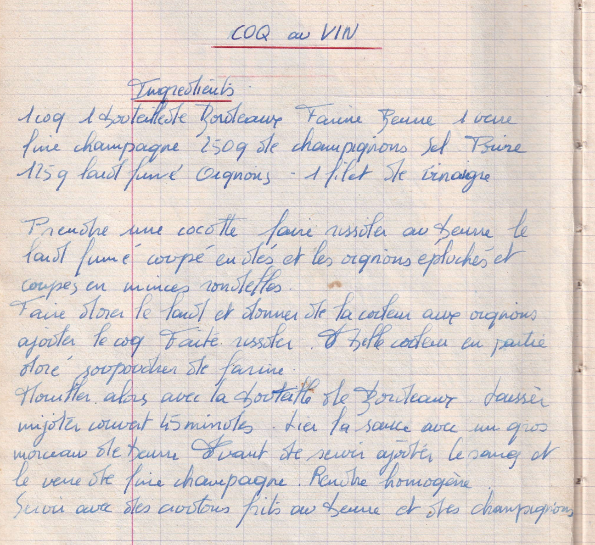

COQ AU VIN

LISTE DES INGREDIENTS
- 1 coq
- 1 bouteille de Bordeaux
- Farine
- Beurre
- 1 verre "fine?" champagne
- 250gr champignons
- Sel, poivre
- 125gr lard fumé
- Oignons
- 1 filet de vinaigre
PREPARATION
- Prendre une cocotte, faire rissoler au beurre le lard fumé coupé en dé
et les oignons épluchés et coupés en minces rondelles
- Faire dorer le lard et donner de la couleur aux oignons
- Ajouter le coq et faire rissoler
- Belle couleur en partie doré saupoudrer de farine
- Mouiller alors avec la bouteille de Bordeaux
- Laisser mijoter couvert 45 minutes
- Lier la sauce avec un gros morceau de beurre
- Avant de servir ajouter le "sang ?" et le verre de "fine?" champagne
- Rendre homogène
- Servir avec des croutons frits au beurre et des champignons